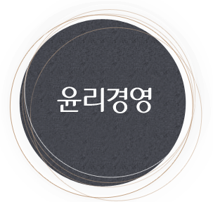
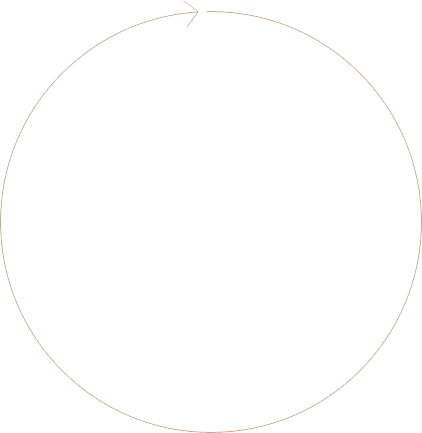

> 지속가능경영>
윤리경영
윤리경영
행동기준
제도운영
공감대 형성


CEO 메시지
“ 윤리경영은 임직원 스스로를 보호하고
글로벌 스탠다드에 부합하는 회사로 성장하는 방법 ”
롯데人의 약속
행동강령은 경영철학을 구체적으로 실천하기 위한 지침으로
롯데정밀화학과 이해관계를 맺고 있는 고객, 주주, 동료, 동반자(경쟁자 및 협력사), 글로벌 공동체와의 관계에서 우리가 어떻게 행동하는 것이 윤리적이고 합법적인지 제시합니다.
자세히 보기다운로드 아이콘- 고객에 대한
우리의 약속 - · 제품과 서비스 제공
- · 윤리적이고 정직한 홍보 및
판매 - · 고객 의견 경청 및 고객 만족
최우선
- 주주와 투자자에 대한 우리의 약속
- · 회사 기록의 정확한 작성 및
관리 - · 회사의 자산 보호 및 적법사용
- · 비밀정보에 관한 정책준수
- 롯데 동료에 대한
우리의 약속 - · 즐겁게 일할 수 있는 환경
- · 정직하고 적법한 업무 수행
- · 건강하고 안전한 근로 환경
조성
- 동반자에 대한
우리의 약속 - · 정정당당한 경쟁 및 건전한
거래 질서 확립 - · 협력사와의 공정한 거래를
통한 상생의 산업 생태계 조성
- 글로벌공동체에 대한 우리의 약속
- · 공유가치 창출 및 사회적 책임
- · 인권존중과 환경보호
- · 전세계 반부패 법규 준수